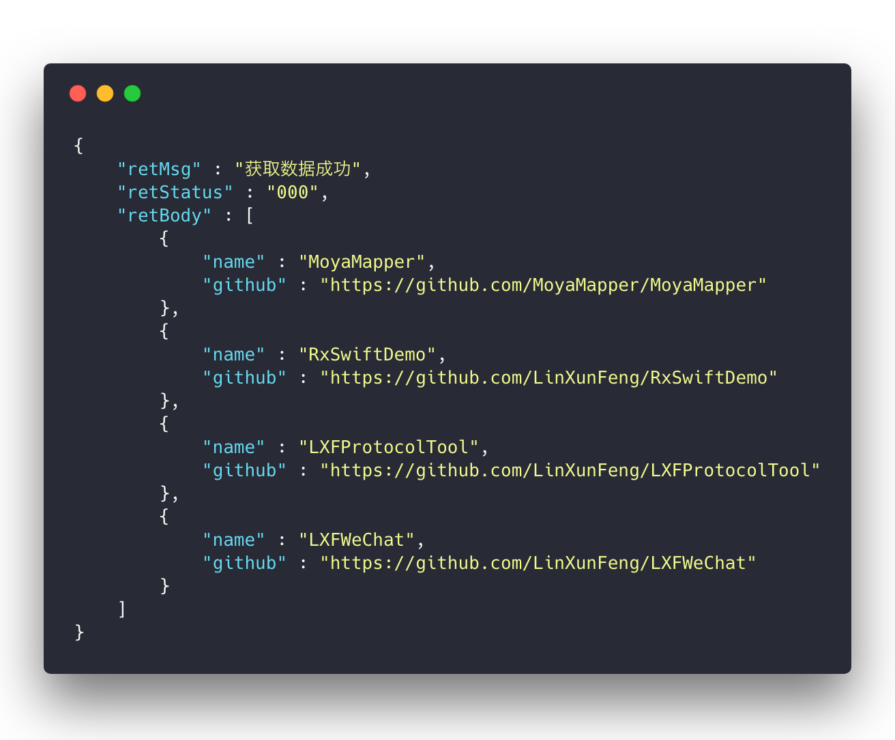
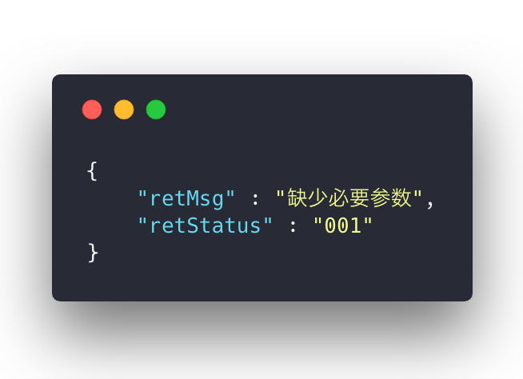

Model¶
一、定义Model¶

支持模型自动映射，不需要考虑源json数据的真实类型，这里统一按
Model中属性声明的类型进行转换
- 一般情况下如下写法即可
struct CompanyModel: Modelable { var name : String = "" var catchPhrase : String = "" init() { } }
- 如果键名需要自定义，则可以实现方法
mutating func mapping(_ json: JSON)
struct CompanyModel: Modelable { var name : String = "" var catchPhrase : String = "" init() { } mutating func mapping(_ json: JSON) { self.name = json["nickname"].stringValue } }
- 支持模型嵌套
struct UserModel: Modelable { var id : String = "" var name : String = "" var company : CompanyModel = CompanyModel() init() { } }
二、Response --> Model¶
1、以下示例皆使用了
MoyaMapperPlugin，所以不需要指定解析路径2、如果没有使用
MoyaMapperPlugin则需要指定解析路径，否则无法正常解析ps:
解析路径可以使用a>b这种形式来解决多级路径的问题
如果接口请求后 json 的数据结构与下图类似，则使用 MoyaMapper 是最合适不过了
// Normal let model = response.mapObject(MMModel.self) print("name -- \(model.name)") print("github -- \(model.github)") // 打印json print(response.fetchJSONString()) // Rx rxRequest.mapObject(MMModel.self) .subscribe(onSuccess: { (model) in print("name -- \(model.name)") print("github -- \(model.github)") }).disposed(by: disposeBag)

// Normal let models = response.mapArray(MMModel.self) let name = models[0].name print("count -- \(models.count)") print("name -- \(name)") // 打印 json 模型数组中第一个的name print(response.fetchString(keys: [0, "name"])) // Rx rxRequest.mapArray(MMModel.self) .subscribe(onSuccess: { models in let name = models[0].name print("count -- \(models.count)") print("name -- \(name)") }).disposed(by: disposeBag)

// Normal let (isSuccess, tipStr) = response.mapResult() print("isSuccess -- \(isSuccess)") print("tipStr -- \(tipStr)") // Rx rxRequest.mapResult() .subscribe(onSuccess: { (isSuccess, tipStr) in print("isSuccess -- \(isSuccess)") // 是否为 "000" print("retMsg -- \(retMsg)") }).disposed(by: disposeBag)
三、Misc¶
关于 Model 还提供了一些其它比较有用的方法，这里重点说一下 Model 与 JSON字符串 的互转
let originModels = response.mapArray(MyModel.self) let jsonArrStr = originModels.toJSONString() let models1 = MyModel.mapModels(from: jsonArrStr) // 不推荐 let models2 = MyModel.codeModels(from: jsonArrStr) // 推荐 let model = originModels[0] let jsonStr = model.toJSONString() let model1 = MyModel.mapModel(from: jsonStr) // 不推荐 let model2 = MyModel.codeModel(from: jsonStr) // 推荐 log.debug("model1 -- \(model1)") log.debug("model2 -- \(model2)")
打印结果
model1 -- MyModel(_id: "5a8f5681421aa9133784f94b", created: "") model2 -- MyModel(_id: "5a8f5681421aa9133784f94b", created: "2018-02-23T07:47:12.993Z")
- 调用
toJSONString()可将Model转为 json 字符串，如："{\"name\" : \"LinXunFeng\"}" mapModel与codeModels都可以将 json 字符串转成对应的ModelcodeModel是仅以Codable的解析mapModel会先调用codeModel， 再调用Model的mapping(_ json: JSON)方法
❗在
模型中定义的属性名与后台返回的json中的字段名不一致时，调用mapModel可能会为自定义的属性赋值，导致数据不正确。❗综上，在
Model与json字符串的互转中， 建议使用codeModel。mapModels和codeModels也一样。
以下的方法就不再赘述
func toData() -> Data? func toDictionary() -> [String: Any] func toJSON() -> JSON